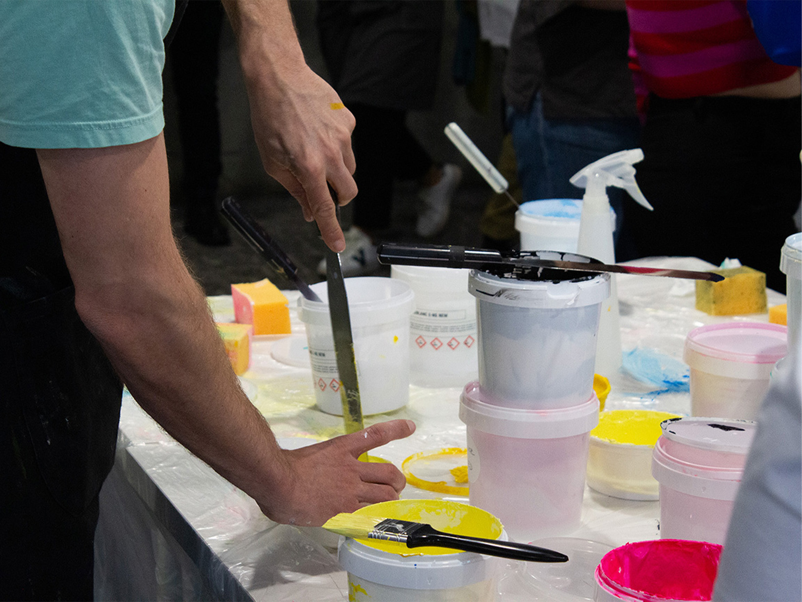
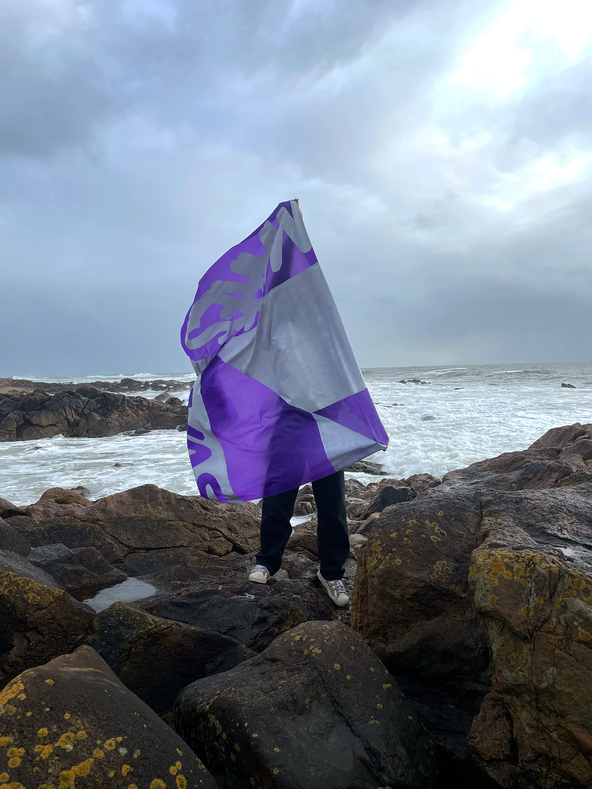
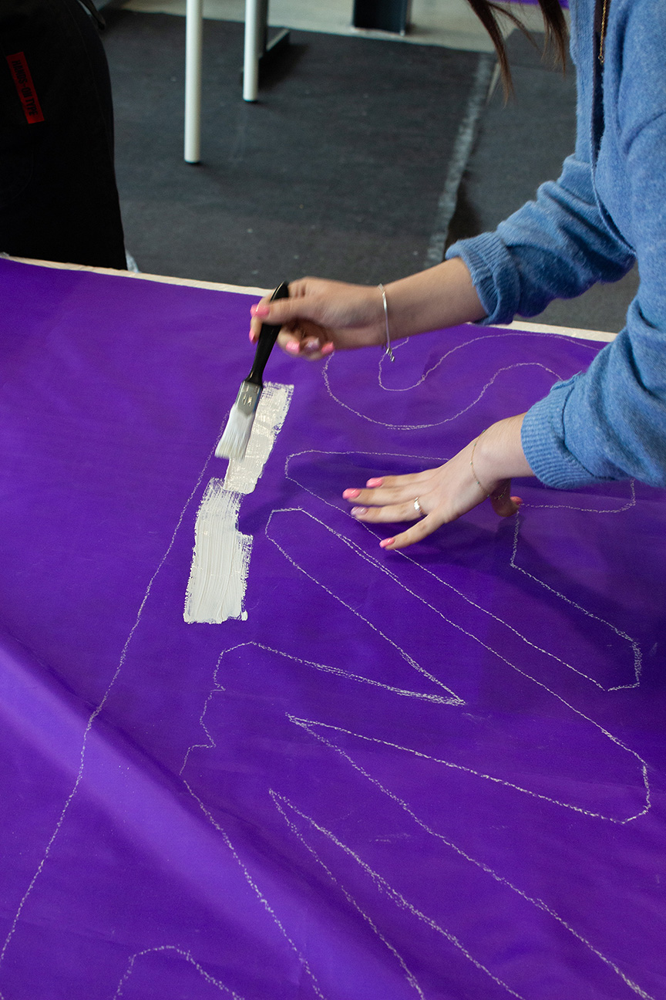
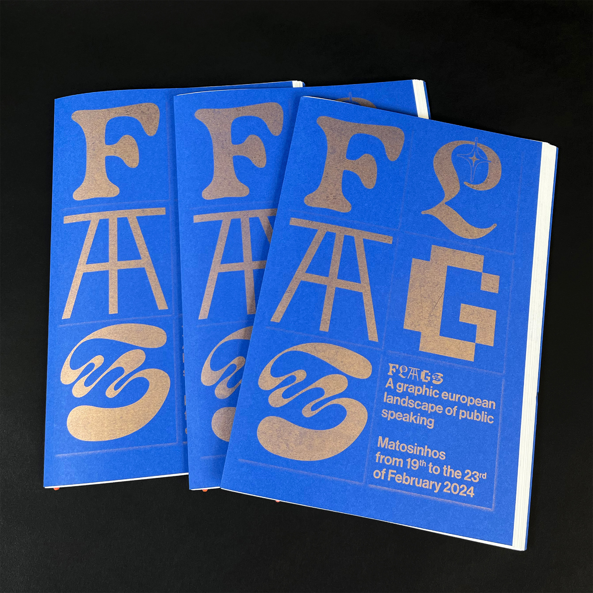
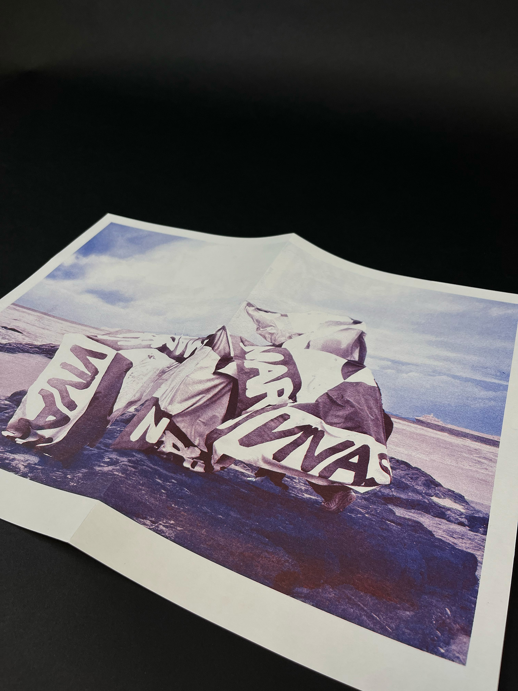

Workshop Erasmus avec le collectif Super Terrain.
En groupes internationaux, nous avons commencé par une exploration photographique du quartier de Matosinhos. Puis, nous nous sommes concentré·es sur la création d'un système visuel basé sur une expression idiomatique du nord du Portugal : « Marés vivas ».
Nous sommes ensuite retourné·es dans l’espace choisi pour photographier notre drapeau, comme un signal envoyé à cette mer agitée. Une édition imprimée en risographie documente le travail de chaque groupe.




